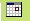
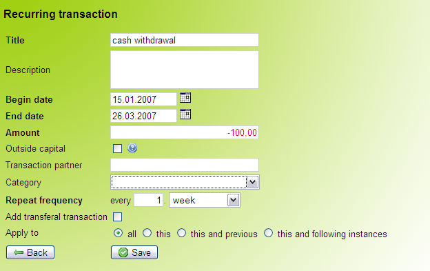
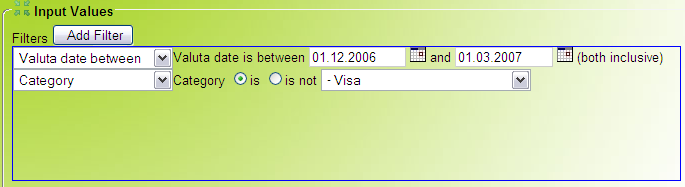
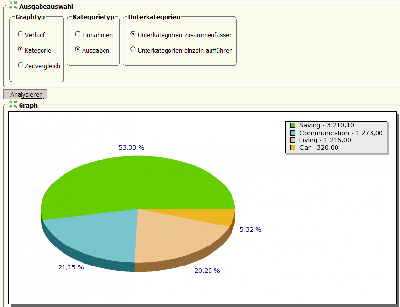
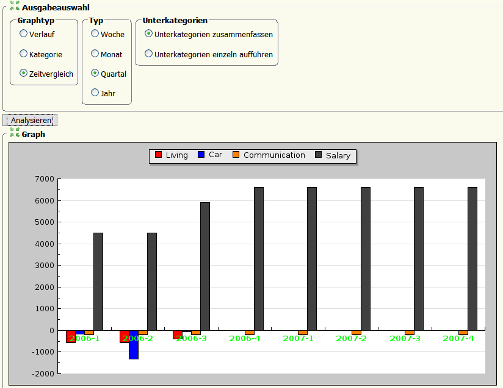

Help 1.0 beta 3
Aus BADGERwiki
Note: As there are no functional changes from version 1.0 beta 3 to 1.0, this page also applies to BADGER finance 1.0.
Contents
|
[bearbeiten] 1 Getting Started
[bearbeiten] 1.1 Installation
[bearbeiten] 1.1.1 Windows installer
[bearbeiten] 1.1.1.1 Who should use this installer?
Windows users not currently running a websever or a database server should use this installer. This should include most "regular" Windows users. Please check Settings -> Control Panel -> Software first to make sure that you don't have Apache (webserver) or MySQL (Database) installed.
[bearbeiten] 1.1.1.2 Installing BADGER finance
- Download the Windows installation file (.exe file)
- Execute the downloaded file by double clicking it.
- The installation routine will start up and show you the GPL, which is the license that BADGER finance uses. You will need to accept the GPL terms in order to proceed.
- Choose an installation path. The default is C:\Windows\Program Files\Badger. It wont hurt to leave this as is.
- After clicking on "Next" ("Weiter" in German) you will be asked if you'd like BADGER placed in your Start Menu. You may leave this as is, as well.
- Click "Install" (German: "Installieren") and the install routine will start copying the necessary files.
- Click "Finish" (German: "Beenden") and the installer will close. At the same time, a Command Prompt will open up (as shown in the image below). XAMPP lite (the platform on which BADGER runs) will be configured and the BADGER database will be installed.
- After a few moments you will see "Sie koennen dieses Fenster nun schliessen - You can close this window now". Do just that by clicking the X in the upper right hand corner of the window. Done - Badger is installed!
{kind=link}
[bearbeiten] 1.1.1.3 Starting BADGER finance
A shortcut to start BADGER finance will be placed on your desktop as well as in the Start Menu. Click either to start BADGER. A command prompt will open and it needs to remain open while you work with BADGER finance. After about 5 seconds, BADGER will open in your standard browser. You can now log into BADGER for the first time.
Caution: Please do not close the command prompt window entitled "BADGER finance" while working with BADGER. Loss of data might occur.
[bearbeiten] 1.1.1.4 Closing BADGER finance
In order to close BADGER finance, close your web browser and the command prompt window. In order to preserve system ressources, you may also want to click the "Stop BADGER finance" start menu option.
[bearbeiten] 1.1.1.5 Which programs are installed ?
XAMPP Lite (http://www.apachefriends.org) is installed alongside BADGER finance (when using the windows installer) to provide a webserver and a MySQL database server. It is also possible to run BADGER from hosted web space. In this case, make sure your hosting provider is running PHP 5.
[bearbeiten] 1.1.1.6 Supported operating systems
- Windows XP (tested)
- Windows 2000, ME, NT (tested. Please install the firefox browser when experiencing problems.)
- Linux (See below for detailed installation instructions)
- BADGER has also been reported to work on Mac - this has not been tested or verified by the development team yet.
[bearbeiten] 1.1.1.7 Deinstalling BADGER finance
Please click on "Uninstall BADGER finance" in the start menu to uninstall the program. Please note: You will not be prompted for confirmation. BADGER finance will be completely removed from you system along with XAMPP Lite. All data will be lost if you did not save a backup of it.
[bearbeiten] 1.1.2 Other ways to install BADGER finance
If you are already running a webserver and a database server, you may choose to use those to run BADGER finance. In order to do so, follow these steps:
- Download the archive, including the php files and the sql dump, from the badger website.
- Extract the files into your web directory.
- Create a database to be used by BADGER finance.
- Execute the file badger/badger.sql on that database. (For example: using phpmyadmin).
- Edit the file badger/includes/config.inc.php to reflect your environment:
- DB_USERNAME: Name of the database user.
- DB_PASSWORD: Password for the database.
- DB_HOST: Database server address. You usually do not need to change this.
- DB_DATABASE_NAME: Name of your BADGER finance database.
- LOG_FILE_NAME: Name of your logfile. This file needs to be writable by the webserver. For added security, place it outside the webroot.
- Point your browser to badger/core/checkPrerequisites.php on your webserver to make sure you have all prerequisites you need for BADGER and it will give you tips on how to fix potential problems.
- Point your browser to badger/modules/welcome.php on your webserver.
- The default password is badger.
[bearbeiten] 1.2 First login
Please enter the default password badger and click login.
{kind=link}
[bearbeiten] 1.3 Change default password
You should change your password after your first login. To do so, click "System", then "Preferences" (or "Einstellungen", should BADGER still speak German). Please enter the old and new password and confirm them by clicking the "save" button.
[bearbeiten] 1.4 Change the language to English
Upon your first login, you might have to change the language to English. To do so, click on "System", then "Einstellungen".
[bearbeiten] 2 General
[bearbeiten] 2.1 Tooltip
When using BADGER, you will notice this question mark everywhere. Move your mouse button over it to see tooltips, giving you hints on what needs to be done. Question marks are usually next to a form field or below a table column.
{kind=link}
[bearbeiten] 2.2 Calendar
 This symbol triggers a calendar when clicked. Use the calendar popup to pick dates.
{kind=link}
[bearbeiten] 2.3 Mandatory form fields
Form fields with a bold caption are mandatory. You must fill these form fields in order for BADGER to make sense of your input. In the following screenshot, you can see two form fields, the first being mandatory, the latter being voluntary.
{kind=link}
[bearbeiten] 2.4 Sorting tables
Currencies, accounts, transactions and the like are displayed by ways of tables. ("Grid", we call it).
{kind=link}
These tables can be sorted by clicking the column headers. Click once to sort by ascending order, twice to sort by descending.
[bearbeiten] 3 Accounts
[bearbeiten] 3.1 General
Accounts are the basis for managing your money within BADGER. An account can be your savings account, credit card, checking account, etc.
[bearbeiten] 3.2 Creating a new account
{kind=link}
Create a new account by selecting "Accounts --> New --> New Account" from the menu.
{kind=link}
- The account's name should make sense if you plan on working with multiple accounts. Using the name of your bank is one way of doing this.
- The account description is used for further differentiation.
- The lower limit sets how low your account should be allowed to drop. The forecasting module makes use of this setting when performing its calculations.
- The upper limit also affects the forecasting module.
- You can choose which currency the account should default to. Please note that BADGER does not currently support online currency conversion. This setting only effects the account display.
[bearbeiten] 3.3 Accounts overview
This overview shows you your accounts with their respective current balances.
[bearbeiten] 3.4 Editing an account
If you need to edit an accout, check the account in question and select "Edit" from the top menu. You may also double click on the account. You will see a form similar to the one for creating a new account.
[bearbeiten] 3.5 Deleting an account
In order to delete an account, check the box in front of it and chose "delete". You will be prompted to make sure you are sure you want to delete. Be aware that all transactions assigned to the account are deleted along with it.
[bearbeiten] 3.6 Viewing an account
You can view an account along with its transactions by selecting it from the top menu after it has been created.
{kind=link}
On the transaction overview, you may choose to create, edit, sort and delete single or recurring transactions. The filters on top allow you to filter your transactions. For example, you can look only at transactions from the last 2 weeks, only at transactions from within the category "car" or only transactions with a value of more than 100 Euros.
{kind=link}
[bearbeiten] 4 Transactions
[bearbeiten] 4.1 Creating a transaction
You may create a single or recurring transaction. A transaction is any form of income or spending.
[bearbeiten] 4.1.1 Income
An income transaction is used anytime money flows into one of your BADGER managed accounts. Enter a positive amount into the form for transactions to create an income transaction.
[bearbeiten] 4.1.2 Spending
A spending transaction is used anytime money leaves one of your BADGER managed accounts. Enter a negative amount into the transaction form to create a spending transaction.
[bearbeiten] 4.1.3 Single transaction
A single transaction is a transaction which occurs only once. It may be dated in the past, present or future. Enter a positive amount for a one time gain, or a negative amount (put a "-" in front of the amount) for a one time expense.
Please pick the account in question and enter a title and description for the entry.
The flag "outside capital" is used to indicate money managed as part of a loan. The flag helps BADGER finance to assess your situation more realistically.
You may chose to enter the transaction partner with whom you did business.
Then, choose a category for the transaction. These categories are used for sorting, statistics and forecasting.
The checkboxes "Exceptional transaction" and "Periodical transaction" reflect in the forecasting module. This way, exceptional transactions will not count towards your daily pocket money. Also, periodical transactions are only counted once.
{kind=link}
[bearbeiten] 4.1.4 Recurring transactions
You can create a transaction that occurs periodically in a set time interval. You only need to enter it into the system once. (Perfect for rent, phone bills and the like.)
Pick the appropriate account and enter a title and description for the transaction. Then, enter the first time the transaction was executed and the last time it will be. Finally, assign a value (positive as a gain in salary, negative as spending on things like rent or recurring bills).
The flag "outside capital" is used to indicate money managed as part of a loan. The flag helps BADGER finance to assess your situation more realistically.
You may chose to enter the transaction partner with whom who you did business.
Then, chose a category for then transaction. These categories are used for sorting, statistics and forecasting.
By specifying the frequency, you will tell the system when it should automatically execute a recurring transaction. Possible options are daily, weekly, monthly or yearly.
Example 1:
Start date: 01.01.2006
End date: 31.12.2006
Frequency: every 2. month
The transaction will be executed every other month starting january first: 01.01.2006, 01.03.2006, 01.05.2006, 01.07.2006, 01.09.2006, 01.11.2006
Example 2:
Start date: 12.01.2006
End date: 14.02.2006
Frequency: every 1. week
The transaction will be carried out every week starting january 12th: 12.01.2006, 19.01.2006, 26.01.2006, 02.02.2006, 09.02.2006
{kind=link}
[bearbeiten] 4.1.5 Editing a recurring transaction
Of course, you can also edit a recurring transaction. To do this, edit an instance of the chain of transactions. At the bottom, choose which transactions your changes should apply to. 
{kind=link}
[bearbeiten] 4.2 Importing transactions
By picking "Import transactions" from the menu, you are taken to the csv-import-module. CSV is a file format that many banks use to serve the online banking data in. If your bank supplies these files, you have a structured text file containing your bank account transactions. Now you don't need to enter them manually into BADGER finance, you can just import them if there is an existing Parser for your banks csv files. (The parser is the adapter that makes it possible for BADGER finance to understand all those different csv file formats. Check the BADGER online forums for a parser for your bank!)
{kind=link}
Browse for the csv-file on your local computer by hitting the browse button. Now pick the csv-format which your bank uses.
Those formats are usually not interchangable, so you will need to either find a parser for your bank, write one yourself or find somebody who does it for you. Don't worry, it is neither too complicated nor too time consuming, so chances are really good that you will find somebody in the BADGER finance online forum who will help you!.
Now chose the account in which you would like to load your transactions.
After you hit the upload button, you will be shown all transactions from the csv file that are not already managed by BADGER finance. You may now work with every single transaction, editing partner, title, assign a category or a different account.
Use the question mark tooltips if you feel confused.
Hit the save button when done and the transactions are written to the database and saved into your account.
Starting with the Badger 1.0 beta 3 release, there is also a matching functionality. Imported transactions are compared to existing transactions by comparing amount, vlauta date and description. You can alter the specific settings in the preferences dialogue. Should the module find matches, those will be displayed to you in the following dialogue via a drop down on the right hand side of the screen. You may now chose which match really is the transaction you are currently importing.
[bearbeiten] 4.3 Transaction categories
[bearbeiten] 4.3.1 Create new category
Chose this menu item to create a new transaction category. Categories are used by BADGER finance to manage the transactions.
They affect the statistics and forecasting module.
You must assign a category name and may assign a category description. You may also check if the category is an outside capital category, meaning the money gained in this category is borrowed and not counted as a real gain by the system.
For every category you can assign a parent category ("rent" and "water" and "gas" being children categories to "living" for example.) If you do not assign a parent category, the category will be created as a top level category that can hold child categories itself.
{kind=link}
[bearbeiten] 4.3.2 Category manager
The overview shows you a list of all transaction categories which may be edited, deleted or new categories added.
{kind=link}
[bearbeiten] 4.3.3 Edit transaction category
Double click a category or check the box in front of it and hit "edit" to edit a category. Make sure you hit the "save" button when done.
{kind=link}
[bearbeiten] 4.3.4 Delete transaction category
Check a category and hit "delete" above the category grid to delete it. You will be prompted if you are sure.
[bearbeiten] 5 Statistical analysis
[bearbeiten] 5.1 Standard statistical analysis
This module enables you to view your accounts graphically.
{kind=link}
You may chose between two kinds of statistics:
- "Trend" shows the account balance as a line graph. This way you may graphically see your balance history.
- "Categories" shows spendings or earnings categorized as a pie diagra. This way, you may see what you spend on which categories - or what you earn which way.
Both kinds of statistics need a time frame and the used accounts for input. The module then reviews the picked accounts within the set time frame. Please note that at this time there is no automatical currency conversion for accounts maintained in different currencies.
The trend analysis does not require any further input.
The category pie diagram needs two additional inputs. First, you need to chose whether you want to analyze income or spendings. Secondly, you need to pick if categoris should be summond under their parent category or listed individually.
[bearbeiten] 5.2 Advanced statistical analysis
This module was created based on the experiences we had with the former statistics module.
[bearbeiten] 5.2.1 Filters
Within this statistics module, you can apply very differentiated filters to the data you are analyzing.  Hit "Add Filter" to add a filter, chose "Delete Filter" from the first drop down to delete the filter.
{kind=link}
[bearbeiten] 5.2.2 Graph type 1: Trend analysis
You can use the trend analysis to do one of two things: Either you can simulate your account balance for the past and future. To do this, only use chronological filters and chose "Balance" as the trend start value. This way, you can see how your account balance will change over time. The other thin you can use the trend analysis for is analyzing spending / earning habits in certain areas. Filter for a category and chose "0" as a starting value for the trend graph. This way, you can find out, how your spending in the area of cars has been / will be. When have you spent a lot, when have you made a lot ?
{kind=link}
When you have the option "Tick labels" set to "show", you will notice markers on the trend graph. Click those markers and the grid below the graph will show the transactions that occur at that point in time.
[bearbeiten] 5.2.3 Graph type 2: Category analysis
With the category analysis, you can see in what categories transactions from a certain time span fall. When you click a slice of the pie, the table below the graph will show the transactions that fall into that category. You may chose to summarize subcategories into the parent category or to view them individually. 
{kind=link}
[bearbeiten] 5.2.4 Graph type 3: Timespan analysis
With the timespan analysis, you can compare your spendings / earnings per category from period to period. Example: you want to check, what your income has consisted of in the last year. Check "Month" and "summarize sub-categories" for easier reading and hit "Analyze". The BADGER will now show you income above 0 and expenses below 0. 
{kind=link}
[bearbeiten] 6 System
This menu entry shows you system wide preferences, the currency settings and the backup module for generating and loading badger backup data.
[bearbeiten] 6.1 Preferences
BADGER may be configured as follows:
{kind=link}
- Theme: Pick the look and feel of your choice
- Language: Pick a language
- Date Format: Pick a way for BADGER to display the date.
- Seperators: Pick a way of decimal spacing that best suits your needs.
- Maximum Login Attempts: As a security measure, BADGER will close the account after a number of wrong logins.
- Duration of Lockout (Sec.): Here you may enter the time in seconds that BADGER will lock the account.
- Start page: Here you may enter any url from within BADGER to serve as your personal start page used when BADGER starts up.
- Session time: Length of a session. Be inactive for this long and you're automatically logged out.
- Planning horizon: How long should badger plan in the future using recurring transactions? All transactions further in the future will be cut-off for usability reasons.
- Auto-insert recurring transactions: Check this setting if you want recurring transactions turned into single transactions that really did happen on their valuta date. Check this if you do not use the csv- functionality. Uncheck it if you do to prevent double entries.
- CSV Input values: Use these settings to tune your csv parser.
- Change password: Enter old and new passwords here to change your password.
Hit "save" to commit the changes.
[bearbeiten] 6.2 Backup
BADGER finance comes with a backup export and import functionality.
[bearbeiten] 6.2.1 Import
BADGER allows you to import existing backup data into the system. This way you can move data around or recover after something went wrong.
{kind=link}
Please note that any data in the sytem will be deleted and then overwritten with the contents of the backup file. Check that you have read the security warning to enable this functionality.
[bearbeiten] 6.2.2 Export
By clicking "export", you can save the current BADGER database to disk as a backup.
{kind=link}
[bearbeiten] 6.3 Currencies
Manage currencies in this module. The currencies are later available all around BADGER.
{kind=link}
[bearbeiten] 7 Printing
Use this link to view the current page in a printer friendly format. Printing statistics and forecasting is not supported on all printers yet.
[bearbeiten] 8 Help
If you press help, you should end up right here.
[bearbeiten] 9 About Badger
Check out the About Tab to learn about BADGER and the technology and licences used.
[bearbeiten] 10 Logout
Click this to log out of BADGER and end your session. You may log back in later or switch BADGER finance off.


- Diese Seite wurde zuletzt am 2007-02-24 um 03:26:41 Uhr geändert.
- Diese Seite wurde bisher 273 mal abgerufen.
- Content is available under GNU Free Documentation License 1.2.
- Datenschutz
- Über BADGERwiki
- Impressum